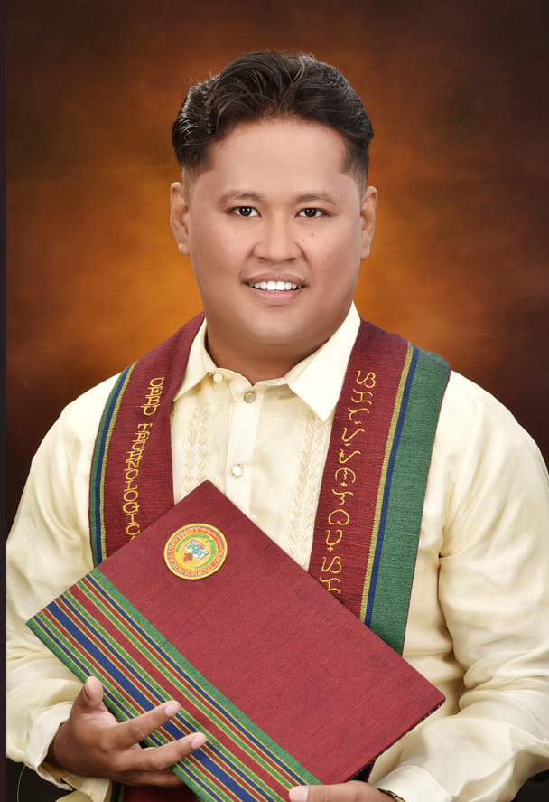

Stephean B. Pardillo
Inayagan City of Naga, Cebu
Contact Info

Objective:
Highly motivated and dedicated graduate with a Bachelor’s degree in
Industrial Technology, specializing in Computer Technology, and
possessing valuable hands-on experience in IT. Additionally, a certified
welder (NC2). Seeking an opportunity to apply my skills and contribute
effectively to a dynamic team, while embracing challenges in a professional
and growth-oriented work environment
Education and Skills:
College:
Senior High:
Immaculate Heart of Mary Academy
Accounting, Business and Management
2018-2020
High School:
Elementary:
Skills:
- Welding (NC2 Holder)
- Web Development
- Technical Troubleshooting
- Team Collaboration
- Adaptability
- Time Management
Work Experience:
Desktop Support Engineer
EXL Service, 2 Quad Bldg, Cardinal Rosales Ave, Cebu City, 6000 Cebu
July 4, 2024 – January 22, 2025
- Provided comprehensive technical support to employees, ensuring the smooth operation
of desktops, laptops, and peripherals.
- Diagnosed and resolved hardware and software issues, ensuring minimal downtime for
staff and improving operational efficiency.
- Managed and configured desktop environments, including OS installation, patch
management, and security updates.
- Supported users with troubleshooting and resolving networking issues, including
connectivity problems and VPN setups.
- Collaborated with cross-functional teams to deploy software and applications across the
organization.
- Documented support cases and resolutions, maintaining a knowledge base to streamline
issue resolution processes.
Kepco Technician
GGC Services Inc., Mandaue City
September 2023 - October 2023
- Conducted maintenance and repairs on equipment according to technical specifications.
- Collaborated with team members to troubleshoot and resolve technical issues efficiently.
Part-time Waiter
- Provided excellent customer service during events, ensuring guest satisfaction.
- Managed food and beverage service, handling multiple tasks efficiently in a fast-paced
environment.
- Collaborated with the catering team to ensure seamless event execution.
Construction Worker
- Participated in various construction projects, performing tasks such as demolition,
concrete work, and site preparation.
- Followed safety protocols and contributed to the timely completion of projects.
- Worked effectively as part of a construction team.
Part-time Computer Technician
- Provided hardware and software support to clients, diagnosing and resolving technical
issues.
- Installed and configured computer systems, ensuring optimal performance.
- Assisted with network troubleshooting and maintenance tasks.
OJT 1st Semester: St. Catherine Multiple Intelligence Dev`t Inc.
- Assisted customers with issues related to products (printers, laptops, computers, etc.).
- Assembled computer units.
- Troubleshot and repaired printers and computer units.
OJT 2nd Semester: Foundever (IT-OJT)
- Opened and resolved tickets submitted by Team Leads (TLs) and agents.
- Assisted agents with issues related to their PCs.
- Set up softphones for agents.
- Created accounts for new agents (e.g., Starbucks, Expedia).
- Performed preventive maintenance and conducted monthly inventory of computer units.
- Reformatted and cloned PCs for new agents, installing designated tools and antivirus
software.
Certification:
- National Certificate II (NC2) in Welding
Reference:
- Michael Sarvida
- Desktop Support Engineer L2
- 2 Quad Bldg, Cardinal Rosales Ave, Cebu City
- 09192505924
- Jade Lozano
- Desktop Support Engineer L1
- 2 Quad Bldg, Cardinal Rosales Ave, Cebu City
- 09218618543
- Albert James Galeon
- Desktop Support Engineer L1
- 2 Quad Bldg, Cardinal Rosales Ave, Cebu City
- 09603422012
- Gino B. Camay
- Sr Specialist IT Systems
- 4th Flr. Robinson Galleria Cebu City
- 09294070806
- Archie C. Reducto
- Sr Specialist IT Systems
- 4th Flr. Robinson Galleria Cebu City
- 09996561483
- Mark Neo
- Sr Specialist IT Systems
- 4th Flr. Robinson Galleria Cebu City
- 09297799800